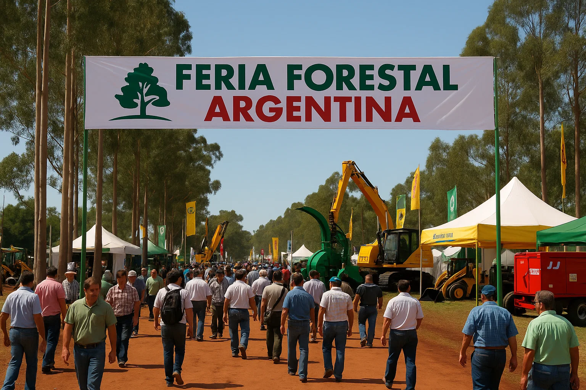
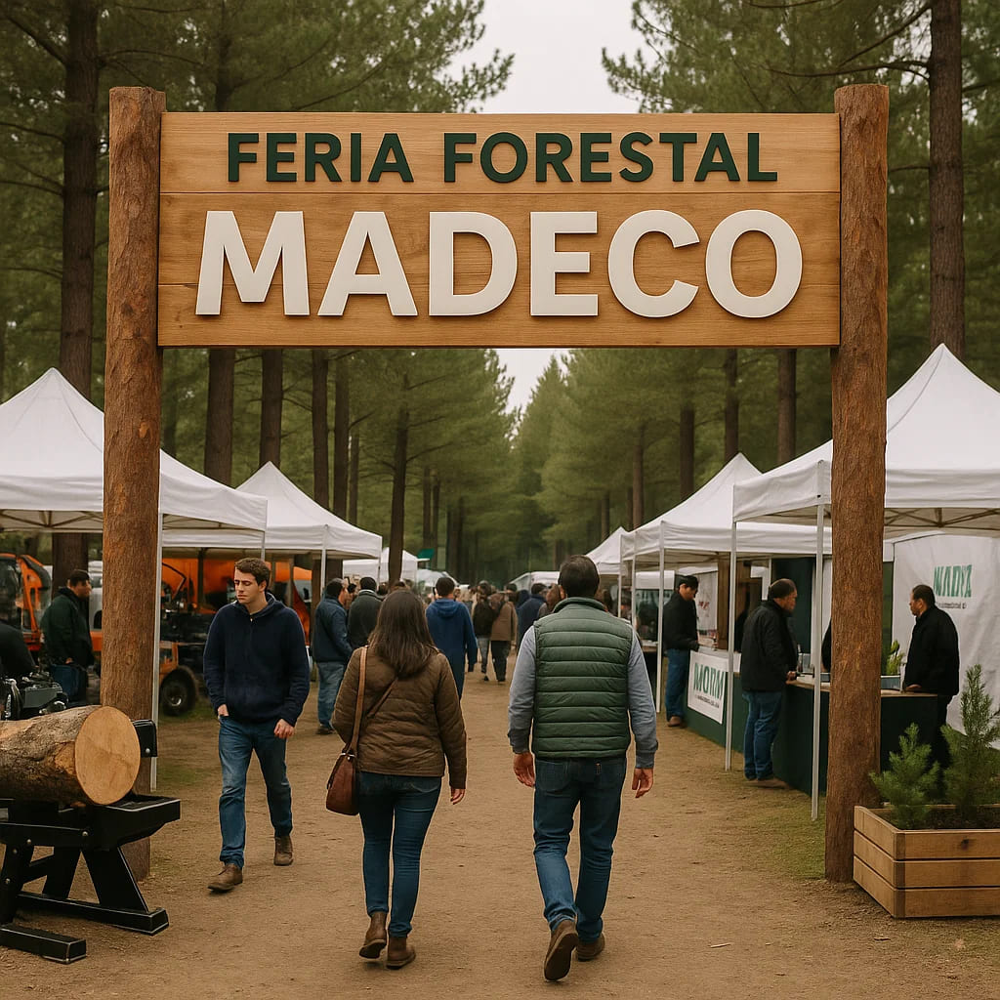
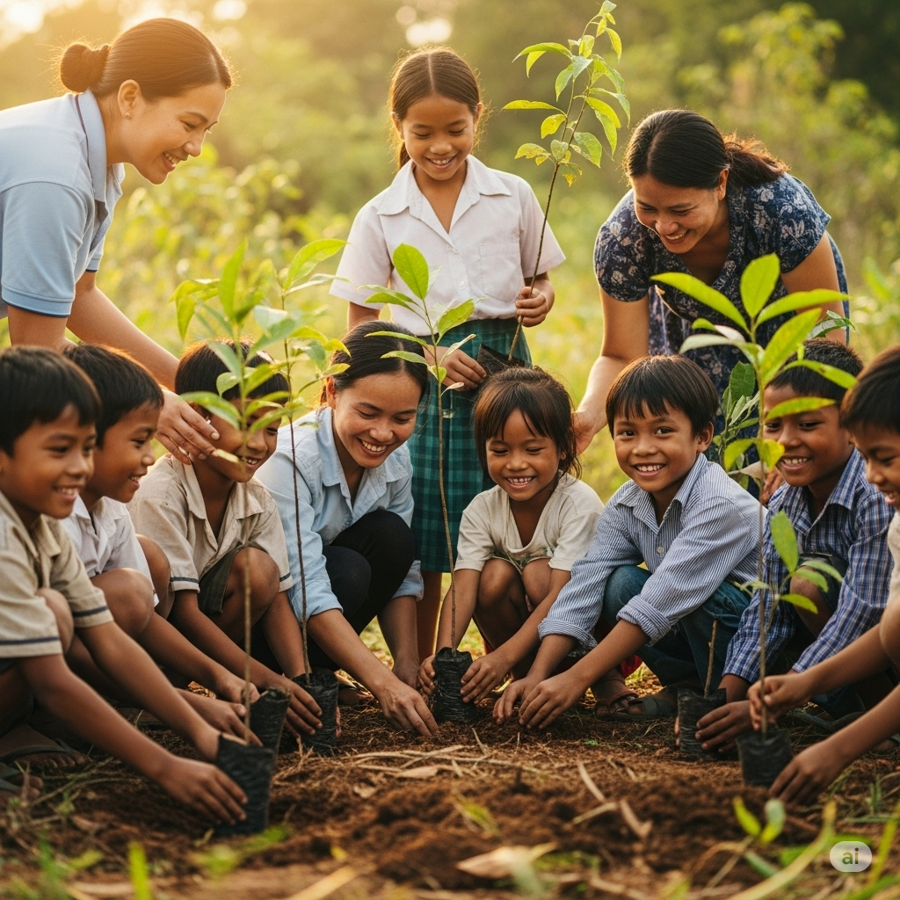

 Marzo 2025 Feria Forestal Argentina Participamos en la exposición más grande de la industria maderera del país, mostrando nuestra línea premium. Posadas, Misiones
 Abril 2025 Workshop de Carpintería Evento gratuito con talleres prácticos de uso de herramientas, selección y mantenimiento de maderas. Taller Madeco, Oberá
 Junio 2025 Reforestando el Futuro Iniciativa ecológica con escuelas rurales para promover la plantación de especies nativas en la región. Zona centro, Misiones